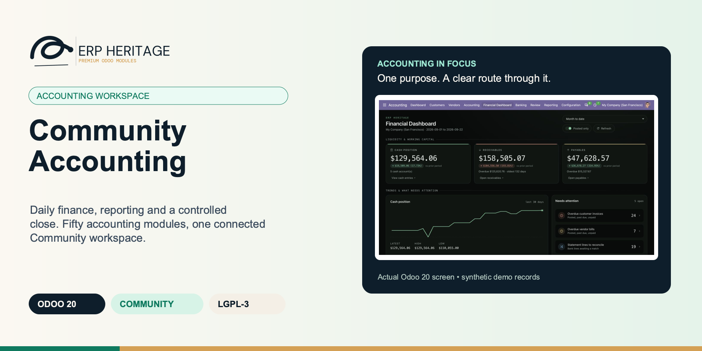
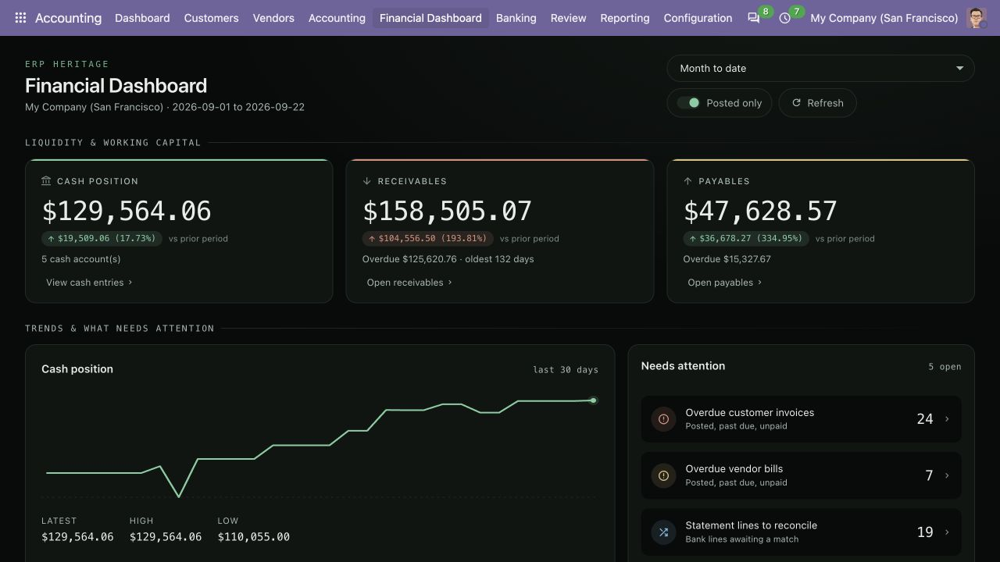
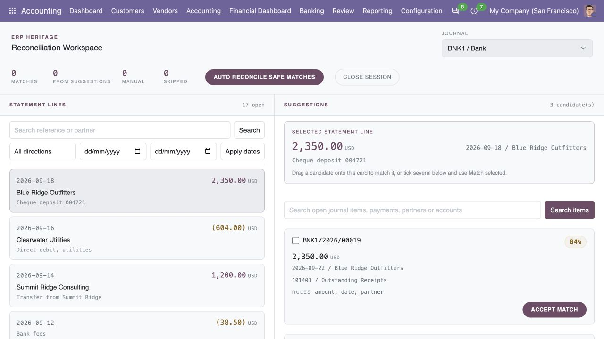
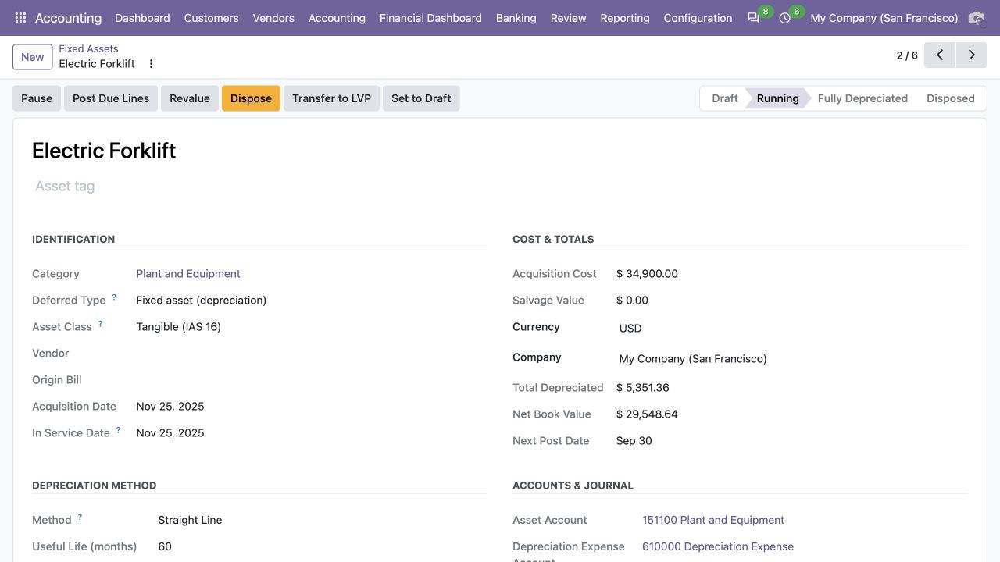
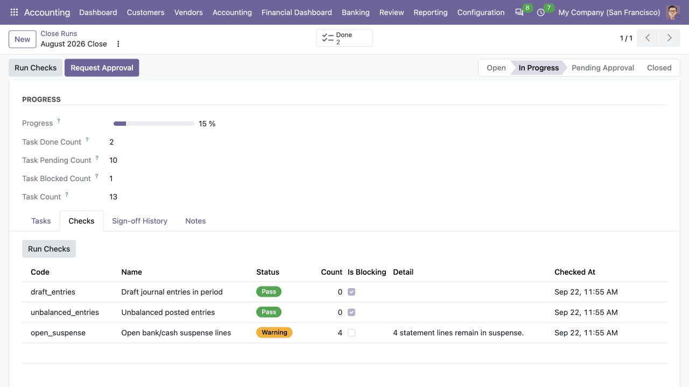
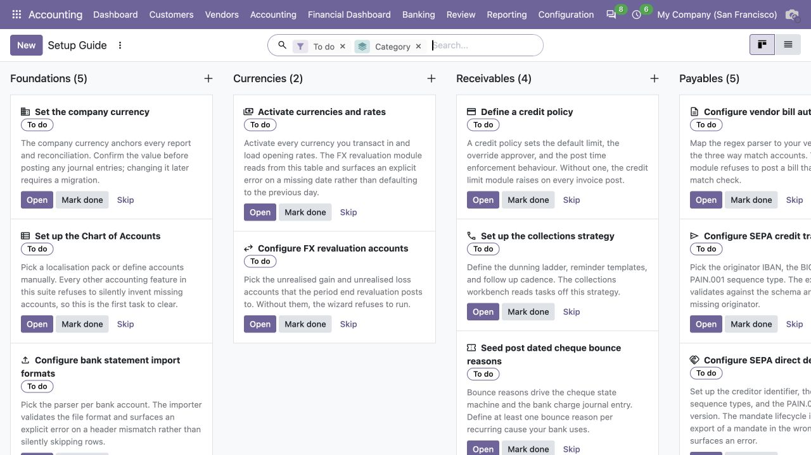

ERP HERITAGE / ODOO 20 COMMUNITY
Odoo 20 Community Accounting Pro
One connected finance workspace for Odoo 20 Community. Bring daily accounting, banking, budgets, reports and period close together, with specialist workflows for growing finance teams. Add Australian BAS only when your business needs it.
LGPL-3 · Odoo 20 · v20.0.2.1.5 · Module guide, setup, workflows and rollout checks
The purpose
Run the finance department. Keep the evidence.
Community Accounting Pro brings 50 accounting modules into one coordinated installation, with shared reporting services and a company-aware setup guide. Start with the work arriving today: bills to approve, receipts to match, customers to contact. Follow it through the ledger, financial statements and period close. The suite gives growing finance teams room to add leases, revenue recognition, consolidation and accounting estimates without changing their core Odoo Community database.
A shorter path from question to record
A balance is useful when your team can explain it. Move from dashboard signals and financial reports into the records behind the numbers. Keep company, period and posting scope visible so a collection question, a budget variance and a close review start from the same accounting context.
Controls that belong to the workflow
Bring approval requests, credit overrides, reconciliation evidence and close sign-off into the accounting process. Give operators the work they need, managers the decisions they own and auditors access to evidence. The shared foundation helps the individual modules behave as parts of one finance department.
Depth when the business becomes more complex
Start with reporting and daily operations, then use the included standards modules for contracts, assets, group structures and estimates. The specialist records expose assumptions and accounting movements for review. Your accountants decide the policy; the software organizes the calculation and its supporting workflow.
Inside Odoo 20
See the accounting workflow.
Captured from Odoo 20 Community using synthetic demonstration records. Configuration screens show the available workflow; external service connectivity still requires the relevant provider setup and validation.

Accounting overview with cash, receivables, payables, trends and work requiring attention.
Captured 2026-09-22 from isolated Odoo 20 Community database with synthetic demonstration records. No external submission or live banking activity is represented.

Posted profit and loss report with native parent-account groups and an explicit statutory ledger scope.
Captured 2026-09-22 from isolated Odoo 20 Community database with synthetic demonstration records. No external submission or live banking activity is represented.

Bank reconciliation workspace showing an open statement line, ranked candidates and an available match action.
Captured 2026-09-22 from isolated Odoo 20 Community database with synthetic demonstration records. No external submission or live banking activity is represented.

Running synthetic asset with cost, depreciation method, useful life and next posting date.
Captured 2026-09-22 from isolated Odoo 20 Community database with synthetic demonstration records. No external submission or live banking activity is represented.

Period-close checks with computed Pass and Warning results for the synthetic close run.
Captured 2026-09-22 from isolated Odoo 20 Community database with synthetic demonstration records. No external submission or live banking activity is represented.

Accounting setup guide links installation tasks to the relevant configuration and workflow screens.
Captured 2026-09-22 from isolated Odoo 20 Community database with synthetic demonstration records. No external submission or live banking activity is represented.
Built for growing finance teams
Four ways to put the suite to work.
A trading business with overdue customers
Start with a customer approaching its credit limit and a bank statement containing part payments. Review exposure before the next invoice, import the statement and match receipts to the correct open items. Give the remaining overdue balance a collections owner and record the promise to pay. At period end, review inventory carrying values and expected credit losses. The useful connection is between sales exposure, cash collection and the estimates reported in the financial statements.
A service business billing over several periods
A contract may include implementation, a license and ongoing support, while invoices follow an agreed commercial schedule. Record the performance obligations and allocation in the revenue workspace, connect recurring billing where appropriate, and review recognition separately from invoicing. Compare the result with the budget and explain the period variance. The finance team can examine contract assets or liabilities without assuming that every invoice belongs entirely to the month in which it was raised.
An asset-heavy operator preparing month-end
Work through new equipment, existing depreciation, lease liabilities and a capital project in one accounting environment. Confirm the asset assumptions, review the lease schedule and assess whether borrowing costs should enter the project record. Route supplier bills through the approval process, then bring the resulting checks into the close run. If an asset changes classification or is disposed of, use the relevant workflow and inspect the accounting movement before signing off the period.
A group controller consolidating several entities
Begin with the local ledgers and confirm that intercompany activity has matching source records. Review exchange-rate inputs, prepare the group consolidation and examine elimination adjustments and ownership effects. Bring the resulting financial statements and disclosures into the reporting pack, with close tasks and evidence available to reviewers. The scenario calls for careful company access and account mapping; the suite supplies the accounting workspaces that keep those decisions connected.
Take the guide with you
Your accounting rollout handbook.
Download the 64-page guide for the module directory, accounting menu map, workflow families, implementation checks and optional Australian BAS extension. Use the module quickstarts to plan ownership and configuration before your pilot.
Inside this module
Built around the work your team does.
Daily accounting with a shared work structure
Connect the routines that create and settle balances: incoming bills, recurring invoices, bank imports, reconciliation, payment batches and collection cases. Each process retains its own evidence and supported controls. Use the bundle to build coherent team handoffs instead of evaluating the daily ledger only at reporting time.
Reports that lead back to their scope
Combine standard financial reports, custom definitions, saved reporting choices and a company-focused dashboard. Reviewers can move from an amount to the applicable detail and retain the reporting context. Scheduled delivery and projections extend the reporting process when their recipients, channels and assumptions have been configured.
Specialist accounting as explicit registers
Use purpose-built records for applicable asset, lease, revenue, impairment, fair-value, deferred-tax, provision and other supported accounting subjects. Separate inputs, period movements and review states help teams explain their treatment. These mechanisms support professional judgement; they do not certify every entity-specific policy or valuation.
Budget and management-accounting context
Review budget versions, actuals, commitments and supported P&L budget columns alongside standard-cost variance and contribution analysis. The suite includes deterministic review and commentary aids with optional provider extension points. Planning assumptions and commentary remain attributable to the responsible finance team.
Group workflows and group reporting
Connect supported intercompany invoices and orders with their destination records, and prepare consolidation with explicit mapping, translation and elimination inputs. Acquisition and associate accounting add separate specialist registers. Keep local processing and group adjustments distinguishable throughout the review.
A close with named responsibilities
Organise period tasks, inspect year-end and foreign-currency adjustments, and apply the audit pack’s live integrity checks with segregated sign-off. Review lock consequences before completing the period. These tools make the close process visible while preserving the need for a responsible preparer and reviewer.
Presentation beyond the trial balance
Prepare supported primary statements and disclosure registers, maintain accounting changes and subsequent events, and calculate basic and diluted EPS. The statement and note workflows give the financial-reporting team more context than a balance extract alone. Entity-specific narrative disclosures remain part of the reporting team’s work.
Explicit integration boundaries
Use the included bank-file parsers, SEPA generators, Peppol document workflow and shared credential foundation within their documented scope. Australian BAS is a separate optional application. Live banking, OCR, access-point transport and optional language-model services need the relevant separate integration. The fixed global bundle also brings Sales, Purchase and Inventory through its dependency chain.
From input to outcome
Follow the complete workflow.
Prepare the business inputs
Map the finance team to daily accounting, control, reporting and specialist work before enabling workflows for each company. Gather company settings, fiscal calendars, accounting roles, installed applications and the opening ledger. Use a representative case with a known expected result so the team can separate configuration decisions from unexpected behaviour. Keep the supporting commercial or accounting evidence available during review.
Run the supported operation
Install the fixed bundle, then use its company-aware setup tasks to assign the configuration that each operation needs. Follow the record’s available actions in the order intended by the workflow. Review the selected company, relevant dates and any validation messages before continuing. If the source data changes, reassess the result against the updated evidence.
Worked operating scenario
A warehouse lease was renegotiated mid-quarter. The modify wizard recomputes the lease liability at the new incremental borrowing rate and adjusts the right-of-use asset by the same delta, with no gain or loss hitting P&L. Foreign-currency payables are retranslated at the closing rate into a single balanced IAS 21 journal, with an optional next-day auto-reversal. Two subsidiaries are consolidated in one run: intercompany sales eliminate against intercompany purchases, the 20 percent minority share is carved out as NCI, and the translation difference lands as a tagged CTA line. Every consolidated number is source-tagged back to parent, subsidiary, elimination, NCI, or CTA, so the auditor can trace it. The whole close is one install, on Community.
Review the result in context
Walk one representative transaction through entry, approval, payment, reporting and close so the team can check ownership at every handoff. Compare the outcome with the expected treatment for this case and record the reason for any difference that requires follow-up. Give exceptions an owner so they do not disappear inside a period-end spreadsheet.
Make the process repeatable
Document the applications and external services needed for the chosen deployment; an installed module is only one part of operational readiness. Include the accepted operating example, configuration choices and unresolved dependencies in the handover. Review them when business policy, source data or the surrounding Odoo applications change.
Business situations
Where this module fits.
Focused operational adoption
Odoo 20 Community Accounting Pro is relevant to finance leaders and implementation partners who need to answer this question: How can one Community accounting workspace connect daily work, specialist accounting and the period close? Start with the process that creates the decision, identify its owner and agree what evidence the reviewer needs. A narrow pilot helps the team evaluate the supported workflow using its own accounting data before broadening access.
A reviewed period-end handover
Use the module’s accounting workspace role as one part of a controlled close. Bring the relevant company settings, fiscal calendars, accounting roles, installed applications and the opening ledger to the review, then explain the result alongside the business event it represents. Establish which outputs become part of the reporting pack and which outstanding matters need a separate accounting decision.
A clear implementation acceptance case
Turn the business question into an acceptance case: How can one Community accounting workspace connect daily work, specialist accounting and the period close? Use one ordinary example and one relevant exception from the supported scope below. Ask the intended operator to prepare it and the reviewer to explain the result. Retain that accepted example with the deployment notes so future changes can be assessed against an understood process.
Before the first result
Prepare a clean, reviewable starting point.
Agree scope before configuration
Confirm that the organisation needs the supported accounting workspace process described here. Identify the responsible finance leaders and implementation partners and write down the decision they expect the module to support. Use the limitations section to separate shipped behaviour from an integration, professional judgement or operational service that needs another owner.
Bring the required data
Prepare company settings, fiscal calendars, accounting roles, installed applications and the opening ledger. Check the relevant records in the intended company and use dates that match the business event. Resolve missing accounting configuration before evaluating calculated output; plausible-looking totals do not establish that the chosen inputs or policies are correct.
Check the installed foundations
This module declares Accounting Suite Base, Accounting Setup Guide, Dynamic Account Reports, Dynamic Reports Pro, Financial Dashboard, Bank Reconciliation Pro, Bank Statement Import, Batch Payment, Collections Workbench, Customer Credit Limit, Recurring Invoices Pro, Post Dated Cheques (PDC), Customer Portal Extra, Vendor Bill Automation, Approval Workflow, Fixed Assets and Leases, Period Close Workflow, Year-End Closing, FX Period End Revaluation, Inter-Company Rules, Group Consolidation, Multi Version Budget Pro, Peppol eInvoicing, SEPA Credit Transfer, SEPA Direct Debit, AI Agent Layer, AI Budget Commentary, AI Collections Advisor, IFRS 9 Expected Loss, IFRS 13 Fair Value, Deferred Tax (IAS 12), IAS 37 Provisions, IFRS 15 Revenue, Revenue Recurring Bridge, Borrowing Costs (IAS 23), IAS 20 Government Grants, IAS 2 Inventory NRV, Investment Property, IFRS 5 Held for Sale, IFRS 3 & IAS 28, Intercompany SO/PO, IAS 8 & 10 Events, EPS (IAS 33), IFRS 2 Share-based Pay, IAS 19 Benefits, Standard Costing & CVP, IAS 1 Primary Statements, IFRS Disclosure Notes, Reports: Budget Columns, Audit Pack & Integrity as part of its installation foundation. Its direct standard-Odoo dependencies are the core applications supplied through the declared dependency chain. Review the actual dependency set in the target database before a rollout, especially where another addon also extends the same accounting models, menus or posting actions.
Set up an owned review routine
Define who operates Odoo 20 Community Accounting Pro, who reviews unusual results and who maintains configuration. Run the representative workflow below in a test database using the intended users. Confirm that users can reach the work they own and that the reviewer understands the available evidence before moving the process into live operation.
Workflow reference
Understand the records and controls.
Foundation and rollout
Use this family to establish reporting infrastructure and an owned configuration process. The base supplies shared report execution, caching, auditing and related accounting services; the setup guide turns configuration work into company-scoped tasks. They support the operating applications rather than replacing the organisation’s chart, taxes or policy decisions. For a new Community database, begin by naming the accounting owner, confirming companies and opening balances, and assigning checklist work. For an existing database, first review the accounting extensions already present. Accept this family when the intended users can reach relevant setup tasks and a representative report has understandable scope and execution evidence.
Financial reporting and oversight
Choose this family for standard financial reports, reusable custom definitions, scheduled delivery and a company-level oversight screen. Standard reports answer different questions from dashboard totals: current open items, period activity and cumulative balances need their own dates and interpretation. Report schedules also require recipient and channel ownership. Begin with one agreed management pack and compare its P&L, balance sheet and ledger detail with known balances. Add custom account roll-ups and formulas only after the standard pack is understood. Review delivery history and treat forward projections as assumption-based scenarios. The dashboard helps direct attention to detailed work; it does not replace the close or the underlying reconciliation.
Banking, reconciliation and payment files
Use this family to bring bank files into the ledger workflow, inspect reconciliation candidates, review payment batches, track cheques and generate supported SEPA documents. Each stage has a distinct operational owner. Importing a statement does not clear every transaction; generating payment XML does not mean the bank has accepted or settled the payment. Pilot an actual bank format and a small representative reconciliation set. Include a duplicate import, an ambiguous match and a payment-validation exception. For SEPA, agree the accepted file variant and mandate process with the bank. For live feeds, arrange the relevant separate connector; shipped provider contracts or stubs should not be described as an already-active bank connection.
Receivables and customer follow-up
Choose this family for recurring invoice preparation, credit-policy enforcement, overdue case management and customer statement access. The collection suggestion bridge adds an attributable next-action aid within the existing case workflow. These tools connect billing and follow-up, but the customer’s dispute, promise and commercial relationship still need an accountable person. Start with a customer cohort whose contract and credit policy are clear. Test a normal invoice, an over-limit posting attempt and an overdue case with a promise to pay. Review the statement from the customer’s own portal identity. Agree who may send follow-up communications and who resolves disputed balances; a suggested action does not itself authorise contact or escalation.
Payables intake and approvals
Use this family to prepare incoming vendor bills and require the relevant approval before accounting posting. Intake, extraction and three-way matching address different checks: reading a supplier reference is not proof that goods arrived, while a matching purchase order does not prove that an invoice was approved at its current value. Select sample bills from actual vendors, including a duplicate, an incomplete receipt and an amount outside policy. Review extraction patterns and matching tolerances with accounts payable and procurement. Live OCR providers need their own adapter or extension. Test the approval chain after a material document change so the team understands when an earlier decision must be renewed.
Assets, contracts and revenue
Choose the relevant registers for fixed assets, leases, deferrals, contract revenue, borrowing costs, grants, inventory write-downs, investment property and disposal groups. These are separate accounting subjects with specific inputs and scope. Installing them together provides a coordinated toolkit; it does not establish that every entity should activate every treatment. Use one reviewed contract or asset example per applicable process. Reconcile initial recognition, period movement and the closing balance, then inspect a representative modification, recovery or disposal. Keep commercial contracts, valuation reports and policy assessments with the review pack. For recurring revenue, confirm the bridge’s link so billing flows into the chosen contract without confusing invoice generation with revenue recognition.
Measurement, impairment and obligations
Use this family where the close needs specialist calculations and controlled accounting records beyond everyday invoices and payments. Its modules address expected credit loss, fair value, deferred tax, provisions, share-based payment and supported employee-benefit accounting. Their usefulness depends on the exposure, valuation, tax, award or actuarial inputs entered. Assign an owner with the appropriate accounting expertise to each applicable engine. Agree the opening position and support the current assumptions before computing the period movement. Inspect the accounting direction, destination accounts and correction path. The employee-benefits module consumes actuarial inputs; it does not generate an actuarial valuation, and no module listing should be taken as an external certification of the entity’s policy.
Planning, costing and assisted review
Choose this family to compare budget versions with actuals and commitments, display supported budget columns in the P&L, analyse standard-cost variances and prepare review commentary. Deterministic assistance works from recorded accounting data. An optional provider connection adds a separately configured narrative capability, not knowledge of unrecorded business causes. Agree the budget version, analytic scope and period basis before comparing amounts. Reconcile standard-cost variance totals to actual cost less standard cost absorbed, and keep analysis-only operation distinct from optional posting. Have management review narratives against the numerical snapshot. Define who maintains rules and optional provider settings, and use staleness indicators when the underlying budget or ledger changes.
Period close and assurance
Use this family to organise close tasks, prepare the year-end entry, revalue eligible foreign-currency monetary balances and apply an integrity-based sign-off. Each tool answers a different control question. A checklist demonstrates assigned work, a revaluation explains a balance movement, and the audit pack’s live checks support the specific sign-off controls it implements. Start with a non-production close for a known period. Resolve missing exchange rates and unfinished tasks, inspect proposed entries, and assign the required preparer and reviewer roles. Understand fiscal and hard lock consequences before sign-off. A completed system check does not replace accounting judgement or external audit evidence, and lock advancement should be treated as an explicit governance decision.
Group operations and consolidation
Choose this family for linked sister-company invoices and orders, group reporting and supported acquisition or associate accounting. Local-company documents, intercompany counterparts and consolidation entries are related but distinct. Account mapping, tax treatment, service-user access, ownership information and exchange rates need explicit configuration rather than assumptions based on similar company names. Pilot two companies with a representative transaction and trace both sides through their actual workflow. Inspect draft counterparts before further processing, then reconcile a small consolidation with known elimination and translation effects. For acquisitions, retain the valuation and control assessment outside the arithmetic alone. Define the correction process for source documents and group adjustments so neither obscures the other.
Primary statements and disclosure
Use this family for comprehensive income, changes in equity, governed disclosure registers, accounting changes, subsequent events and earnings-per-share calculations. It complements standard financial reports by providing presentation and disclosure records with their own review process. The scope is the supported statements and registers, not every note that any reporting entity may need. Agree the reporting period, authorisation date, structural account settings and comparative basis before preparation. Check the statement tie-outs and review manual override evidence in the relevant notes. For EPS, inspect dated share movements and anti-dilutive exclusions. Keep narrative policies and material entity-specific disclosures with the financial-reporting team and preserve the signed records alongside the complete reporting pack.
Electronic invoices and Australian reporting
Use this family for canonical invoice semantics, protected credential storage and Peppol document handling. The Peppol module supplies document generation, parsing, validation and an adapter contract; live access-point transport needs a separate adapter. Australian BAS is a separate optional app that depends on the accounting suite. Installing the global suite does not install BAS or add its country-specific onboarding. Confirm legal identifiers, tax mapping and the chosen external-service arrangement before live use. Test a valid document and a rejected one, then review retry or failure evidence through the configured process. Keep credential-key ownership and backup requirements in the deployment runbook. Core invoice standards, generated files and local validators are not themselves access-point membership or government-service accreditation.
File formats and shared runtime
The statement-import module includes CSV, OFX, QIF, CAMT.053 and MT940 parsers. OFX has an additional parser-library requirement. SEPA Credit Transfer supports PAIN.001.001.03 and PAIN.001.001.09; SEPA Direct Debit generates PAIN.008.001.02. Confirm the version and banking policy with the receiving bank. The transitive encrypted-vault runtime requires cryptography. EH EDI Core creates one idempotent ERP Heritage support contact. These format and installation facts describe the shipped scope, rather than a live bank connection or a promise of bank acceptance.
Roll out one finance process across two companies
Illustrative implementation exercise. A group is moving two companies onto Community accounting. Both need reporting and payments, but only the Australian entity needs BAS preparation and only one entity has leases. Install the global bundle, then choose the separate BAS app only when that Australian reporting process is wanted. Begin with a common transaction and reporting pilot, then assign the applicable specialist setup work. Review the distinction between an installed capability and an approved operational process. Have accounts payable enter and review a bill, treasury prepare its payment, and the controller trace the result to the chosen financial report. Separately inspect a lease and, if the optional BAS app has been installed, its preparation case with the specialist owner. The acceptance decision should record which functions are ready, which remain out of scope and which need separate bank, OCR, access-point or optional AI integrations.
Questions before rollout
Answers your finance team needs.
Who is this module designed for?
It is designed for finance leaders and implementation partners. Its central business question is: How can one Community accounting workspace connect daily work, specialist accounting and the period close? The listing describes the shipped operating scope and the decisions that remain with the organisation. Evaluate it against your own records and review process, rather than treating the module name as a promise to cover every scenario in that accounting area.
What should be ready before the first run?
Have company settings, fiscal calendars, accounting roles, installed applications and the opening ledger ready, together with the person who owns the related accounting policy. Map the finance team to daily accounting, control, reporting and specialist work before enabling workflows for each company. A known example makes it possible to check the result and resolve configuration questions before the process is repeated across more records or companies.
What should a reviewer inspect?
Walk one representative transaction through entry, approval, payment, reporting and close so the team can check ownership at every handoff. Keep the relevant source evidence with the output and be explicit about company, date and policy choices. The most useful review asks whether the result follows from the business inputs, not only whether the operation completed without a validation message.
How does this fit into the accounting suite?
It belongs to the accounting workspace family. Its declared custom dependency foundation is Accounting Suite Base, Accounting Setup Guide, Dynamic Account Reports, Dynamic Reports Pro, Financial Dashboard, Bank Reconciliation Pro, Bank Statement Import, Batch Payment, Collections Workbench, Customer Credit Limit, Recurring Invoices Pro, Post Dated Cheques (PDC), Customer Portal Extra, Vendor Bill Automation, Approval Workflow, Fixed Assets and Leases, Period Close Workflow, Year-End Closing, FX Period End Revaluation, Inter-Company Rules, Group Consolidation, Multi Version Budget Pro, Peppol eInvoicing, SEPA Credit Transfer, SEPA Direct Debit, AI Agent Layer, AI Budget Commentary, AI Collections Advisor, IFRS 9 Expected Loss, IFRS 13 Fair Value, Deferred Tax (IAS 12), IAS 37 Provisions, IFRS 15 Revenue, Revenue Recurring Bridge, Borrowing Costs (IAS 23), IAS 20 Government Grants, IAS 2 Inventory NRV, Investment Property, IFRS 5 Held for Sale, IFRS 3 & IAS 28, Intercompany SO/PO, IAS 8 & 10 Events, EPS (IAS 33), IFRS 2 Share-based Pay, IAS 19 Benefits, Standard Costing & CVP, IAS 1 Primary Statements, IFRS Disclosure Notes, Reports: Budget Columns, Audit Pack & Integrity. Installing the complete suite also brings other operating and specialist modules; using this focused module should be evaluated against its own dependency list and scope. Optional services still need their own configuration and agreement where applicable.
Does the global suite install Australian BAS?
No. Australian BAS is a separate optional app that depends on the accounting suite. The global suite installs its 50 direct accounting dependencies plus the transitive EDI foundation, without BAS or its Australian onboarding. Choose the BAS app explicitly when Australian reporting is required.
Does installing it validate our accounting policy?
No. Odoo 20 Community Accounting Pro provides the specific records, calculations or workflow described in this listing. The organisation remains responsible for its source information, accounting choices, supporting evidence and review. Where the process uses an estimate, a contract assessment or an external service, appoint the appropriate owner before relying on the output.
Does the suite need Odoo Enterprise?
The suite’s declared Odoo dependencies resolve in the Odoo 20 Community source tree. Installing it adds the included ERP Heritage modules and their dependencies, including Sales, Purchase and Inventory through the relevant workflows. The EDI credential-vault dependency requires the cryptography server package.
Can we start with a smaller workflow?
Yes. The accounting capabilities are separate modules. The suite installs the fixed bundle; a standalone module brings only its declared dependency chain. Choose the package around the workflow you need, then review its installation scope before deploying it.
Are live bank feeds and OCR included?
File import and the core intake workflows are included. Live bank feeds, document OCR and language-model providers use separate extension modules and provider configuration. Peppol network exchange also needs a live access-point integration. Check those requirements before comparing total deployment cost.
Can an external accountant inspect the evidence?
The suite includes a dedicated read-only auditor role, with module-specific access to reporting and evidence. Configure the correct companies and test the intended access. An auditor role should let a reviewer inspect the work without granting the posting and configuration authority of a finance manager.
What should we test before the first live close?
Use a copy of a representative period. Check opening balances, one bill approval, a partial receipt, a bank import, a currency adjustment and the reports your team signs off. Add the relevant specialist workflow, such as a lease or revenue contract. Compare outputs to your agreed accounting treatment before production use.
Does the standards coverage certify our accounts?
No. The standards modules address particular calculations and workflows. Your finance team remains responsible for accounting policies, assumptions, supporting evidence and local reporting obligations. Assess the relevant module against your facts and reporting requirements; a standards name is not a certification.
Scope and requirements
Know exactly what you are installing.
The global suite has 50 direct custom accounting dependencies and one additional transitive custom dependency, EH EDI Core. Including the suite itself, the custom-module closure is 52 modules. Australian BAS is a separately selected application and is outside that global installation.
Live bank-provider adapters, live OCR providers, live Peppol AS4 access-point transport and optional language-model providers require their separate integrations. A shipped parser, adapter registry or deterministic helper should not be presented as an active connection to those services.
Sales, Purchase and Inventory are installed through the fixed dependency chain. Review this application footprint before adding the bundle to an established database.
Australian BAS depends on the accounting suite; the global suite does not depend on BAS. Installing BAS brings its Australian reporting and setup work to the suite. Some BAS worksheet labels require manual input and tax-grid configuration.
EH EDI Core requires the Python cryptography dependency and an appropriately configured encryption-key source for its vault. It also creates one idempotent ERP Heritage support contact; archiving that contact is respected.
Specialist accounting calculations use entered assumptions, classifications and external valuation evidence where applicable. The suite does not replace actuarial work, valuation opinions, accounting-policy approval or external audit.
The audit pack can advance durable accounting lock dates. Review the supported sign-off, company policy and correction process before applying those controls to live periods.
Standards references describe the accounting subject addressed by the module. They do not establish certification, statutory filing acceptance or suitability for every jurisdiction. Your finance team owns its assumptions, accounting policies and review.
Installation scope
Included dependencies, explained.
Odoo installs the following direct dependencies automatically. Additional dependencies can be brought in by those modules. Related modules in the wider catalogue are optional unless they appear in this dependency chain.
Accounting Suite Base
Accounting Setup Guide
Dynamic Account Reports
Dynamic Reports Pro
Financial Dashboard
Bank Reconciliation Pro
Bank Statement Import
Batch Payment
Collections Workbench
Customer Credit Limit
Recurring Invoices Pro
Post Dated Cheques (PDC)
Customer Portal Extra
Vendor Bill Automation
Approval Workflow
Fixed Assets and Leases
Period Close Workflow
Year-End Closing
FX Period End Revaluation
Inter-Company Rules
Group Consolidation
Multi Version Budget Pro
Peppol eInvoicing
SEPA Credit Transfer
SEPA Direct Debit
AI Agent Layer
AI Budget Commentary
AI Collections Advisor
IFRS 9 Expected Loss
IFRS 13 Fair Value
Deferred Tax (IAS 12)
IAS 37 Provisions
IFRS 15 Revenue
Revenue Recurring Bridge
Borrowing Costs (IAS 23)
IAS 20 Government Grants
IAS 2 Inventory NRV
Investment Property
IFRS 5 Held for Sale
IFRS 3 & IAS 28
Intercompany SO/PO
IAS 8 & 10 Events
EPS (IAS 33)
IFRS 2 Share-based Pay
IAS 19 Benefits
Standard Costing & CVP
IAS 1 Primary Statements
IFRS Disclosure Notes
Reports: Budget Columns
Audit Pack & Integrity
Server packages declared by this module: python: cryptography.
Acceptance guide
Run a pilot your team can trust.
The following are recommended rollout checks, not claims of additional built-in features. Apply the checks relevant to this module and retain evidence of your own results.
Start with one complete business cycle
Select a recent, closed period that your finance team understands well. Keep its approved source documents, ledger totals and existing working papers available. Reproduce that period in a staging database before working on current transactions. A familiar period makes differences visible: you can distinguish an opening balance problem from a configuration choice, a timing difference or a genuine defect. Agree which person owns each discrepancy and what evidence will close it. Successful installation is the starting point; a repeatable business outcome is the acceptance criterion.
Define the result before choosing settings
Write down the output your team needs from this module: a reviewed transaction, an exported file, a reconciled balance, an approved schedule or an operational queue. Identify who prepares it, who reviews it and who relies on it next. Make the scope concrete with one company, one reporting period and a small representative document set. Include an ordinary case and an exception. This keeps the evaluation focused on the business decision instead of the number of available screens, and gives reviewers a consistent way to compare the new workflow with their current process.
Check the edition and dependency boundary
Use the Odoo 20 edition of the module and its dependencies together. The manifest defines what Odoo installs automatically; a feature mentioned elsewhere in the wider product family is not automatically included. Review the dependency guide on this page before enabling the complete suite, especially where your deployment also uses Sales, Purchase, Inventory or website components. Confirm that your hosting arrangement accepts custom server modules and their Python requirements. Keep a copy of the installed module versions with your acceptance record so a later update can be checked against the same baseline.
Prepare master data with finance owners
Check the companies, currencies, fiscal periods, journals, accounts and partner records used by your sample. Confirm that account purposes agree with your chart of accounts and that archived records are not being selected inadvertently. Review company-specific settings while the intended company is active. Where a workflow needs bank details, analytic dimensions, product information or payment terms, validate those inputs with their owner. Clean master data reduces repeated exceptions and makes it easier to investigate the exceptions that remain. Keep the preparation list short enough for someone else to repeat it.
Keep opening balances traceable
Decide which source establishes the opening position before introducing new transactions. Save the source date, company, currency and supporting reconciliation. If a module maintains a schedule or a working-paper balance alongside the ledger, document how that opening amount should tie to the general ledger. Do not use balancing entries to hide a difference during the pilot. Classify the difference, correct its source and rerun the comparison. The resulting trail is useful both for your internal reviewer and for support if an unexpected calculation needs investigation.
Assign preparation and review deliberately
Choose named users for preparation, review and administration. Confirm their practical access by signing in as those users in staging, rather than relying on an administrator's view of the menus. A visible menu does not replace model access or record restrictions, and a hidden menu does not by itself prove that data is protected. For your own acceptance check, verify the specific business operations each role needs. If your organization requires separation of duties, include that policy in the rollout criteria and check the actual workflow against it before granting production access.
Exercise company boundaries
Run the sample with the intended company selected, then repeat the relevant navigation and search checks as a user assigned to a different company. Record which company owns each source document and each generated result. For users who work across entities, confirm how their allowed-company selection affects totals and available records. Investigate any cross-company difference before it becomes a month-end problem. Group-level work and company-level work have different scopes; use the appropriate module and document the scope on the review evidence instead of assuming one screen represents both.
Use representative currencies and dates
Include a company-currency case and, where relevant to the module, a foreign-currency case. Check the date used to select exchange rates and keep the rate source available to the reviewer. Add a transaction near a period boundary so the team can see whether document date, accounting date or another business date drives the result. Test decimal precision with a small amount as well as a large one. Record the expected rounding treatment. These checks turn vague differences in totals into questions that can be resolved against your accounting policy.
Trace one result back to its source
Choose one result and follow the available links or record references back to the original business document. Compare its company, partner, amount, currency and dates with the expected source. Where the workflow creates a journal entry, inspect the accounts and balancing lines before relying on an aggregate report. Where it exports a file, compare the file's records with the selected batch. Save a small, intelligible evidence set instead of an indiscriminate screenshot archive. A reviewer should be able to explain what happened without needing the original preparer beside them.
Treat posting as a controlled milestone
If this module creates or updates accounting entries, separate preparation from the decision to post in your operating procedure. Inspect the proposed outcome, resolve missing configuration and confirm the intended period before using a posting action. If the module does not post entries, identify the equivalent commitment point, such as sending a file or approving a review record. Record who is allowed to make that decision. The page describes the module's supported workflow; your team still needs an operating policy that fits its accounting responsibilities and approval structure.
From pilot to production
Make the workflow repeatable.
Test correction, not only success
Use a deliberately incomplete sample in staging: a missing required setting, an unsuitable date or a source document that is not ready for the next step. Observe the actual message and the record state that remains. Correct the input and repeat the operation. Check that the recovered result agrees with the ordinary successful case. For transactions already committed, use the supported correction or reversal workflow rather than editing database records. Your acceptance record should explain how staff recover from mistakes, because that is part of day-to-day usability, not an unusual administrative task.
Check repeated actions with a small sample
Repeat an import, calculation, preparation step or button action only where the documented workflow permits it. Confirm whether the expected behavior is a recalculation, a refusal, a new version or reuse of an existing record. Do not infer universal duplicate prevention from one successful test. Record the behavior of the actual operation your team will use and include it in staff guidance. A small, identifiable sample makes duplicate records easy to spot and avoids creating a misleading acceptance result from a large batch with poorly understood contents.
Review period locks before the first close
Where accounting dates are involved, inspect your company's lock settings and the role that can change them. Include one sample dated inside a closed period and one in the open period, then observe the supported behavior with normal finance access. Agree how the team will handle late documents and approved corrections. The goal is a clear route for legitimate work that preserves the reason the period was closed. Record the policy alongside the module's workflow so operators know when to stop and involve the person responsible for the close.
Validate exports with their recipient
If the module produces reports or exchange files, have the intended recipient inspect a sample. For a finance report, check the filters, company, dates, currency, labels and totals. For a bank or service file, use that recipient's own validation or test process before a production submission. Generating a structurally valid file does not establish acceptance by every provider. Keep the exact sample and any recipient feedback with the rollout record. Where no export is provided, agree which supported screen or linked record serves as the handover evidence.
Separate optional services from core work
Identify any step that depends on a separately configured provider, connector, credential or commercial service. Confirm the exact adapter and its requirements before scheduling a live demonstration. Some family modules provide deterministic rules or file preparation without a live external connection; their usefulness should be evaluated on that basis. Test a provider failure in staging only when the adapter offers a safe test route. Make it clear who manages credentials and provider subscriptions, and who should be contacted when an external service is unavailable.
Measure a realistic working session
Time the operations your staff will actually repeat, using a dataset that resembles your expected company, date range and document volume. Record the environment and sample size beside the timings. Include navigation, filtering, preparation and review rather than quoting a single best-case page load. This page makes no universal performance promise: network latency, database size, customizations and infrastructure affect results. Use measurements to choose a practical rollout batch size and to identify any operation that needs investigation before more users join the workflow.
Train through examples with expected outcomes
Give staff a short exercise that begins with a business situation and ends with a reviewed result. Include the expected amount or state, the navigation route, the point at which a reviewer becomes involved and the supported correction route. Let operators explain why their result is correct. Add only the settings and exceptions relevant to their role. A concise internal playbook built from your own pilot is easier to maintain than a large collection of unannotated screenshots, and it helps new users understand the relationship between this module and the rest of Accounting.
Make support requests reproducible
Capture the module version, Odoo version, affected company, operation, exact message and a minimal sequence of steps. Use redacted sample documents when sharing evidence outside your organization. State the expected result and the actual result separately. Include the date filters and role used, because the same record can look different with another scope or set of permissions. Never include passwords, API tokens or private keys in a support message. Good reproduction details allow the problem to be investigated without guessing at your business setup or asking staff to repeat a full close.
Rehearse an upgrade on a copy
Before deploying an update, back up the database and filestore together, and restore that backup into an isolated environment. Apply the module update there, then repeat the key pilot scenarios using the saved acceptance record. Check that existing documents remain readable and that the expected actions and menus still lead to the right workflow. Include one newly created record as well as an older one. Keep a rollback plan appropriate to your deployment and confirm that the backup can be restored before scheduling the production change.
Define a small release decision
Agree the release criteria before the pilot ends: expected financial results, access boundaries, supported corrections, output acceptance and owner sign-off. List unresolved items with their business impact instead of treating every observation as a blocker or dismissing it as cosmetic. Start production with a manageable scope and a named reviewer. Keep the first cycle's evidence so that later enhancements can be assessed against a concrete baseline. App-store descriptions help you select and understand the module; acceptance in your own configuration establishes whether the workflow is ready for your team.
Connected capabilities
Choose the next capability with context.
Explore the included accounting modules below. Australian BAS is an optional country extension: the global suite does not install it. Installing the separate AU module brings in this suite as its foundation.
AI Agent Layer
A reusable AI helper layer for the ERP Heritage accounting suite. It ships three accounting-specific capabilities, each with a working deterministic default that runs with zero API keys and zero network access, plus an optional provider hook for sites that later want live language-model output.
AI Budget Commentary
Wires deterministic budget variance commentary live onto budgets in Odoo 20 Community. Each budget record gains a non-stored computed field that produces plain-English, direction-aware budget-vs-actual analysis without network access. The explicit AI refresh action stores only genuine provider output. A missing, manual, failed, or empty provider raises a clear error and leaves any existing AI narrative unchanged instead of persisting deterministic prose under an AI label.
AI Collections Advisor
A bridge module that wires the deterministic collections next-action engine live onto Collections case records. Every case gains stored, filterable action and priority keys plus a live translated rationale. Declared dependencies keep the stored keys current, while reading the rationale computes only viewer-local text and never writes those keys. The deterministic dunning ladder respects promises, plans, disputes, holds, documented demand-letter age, and write-off review evidence. It runs with zero network access by default. The explicit AI action stores only genuine provider output; a missing, manual, failed, malformed, or control-suppressed provider leaves any existing AI narrative unchanged instead of relabelling deterministic prose as AI.
Vendor Bill Automation
A vendor bill intake pipeline that takes routine bills off the manual key-in queue while keeping every posting under human control.
Approval Workflow
Approval Workflow is the corporate spend control most Community accounting stacks skip: a configurable approval chain that blocks journal entry posting until a defined set of approvers has signed off.
Fixed Assets and Leases
A first class fixed asset register and IFRS 16 lessee accounting engine for Odoo 20 Community. No paid Enterprise modules required. Every schedule is a real persisted record, one line per period with computed depreciation, accumulated balance and net book value, queryable and exportable for audit.
Audit Pack & Integrity
Audit Pack and Integrity hardens the period close so an auditor can trust the ledger. It switches Odoo's inalterable hash chain (restrict mode) on the company's sale, purchase, general, bank and cash journals, then scans the period for four integrity controls: no draft entries, every posted entry balanced to zero, every posted entry on a hash-restricted journal carrying its hash, and no open bank or cash suspense. A period is signed off only after it has ended and only by an EH Accounting Manager who is not the preparer. Sign-off advances both the fiscal-year lock and, where supported, the irreversible hard lock so no exception can reopen the vouched period. The gate is recomputed live at sign-off and the hash chain is re-verified through core, so a stale or tampered check row cannot vouch a period that no longer passes.
Bank Statement Import
Bank Statement Import Pro reads bank statement files into Odoo 20 Community bank statement records, ready for reconciliation. It ships five native parsers behind a single pluggable registry: CSV with a per-bank column profile (column mapping, date format, decimal separator, currency), OFX, QIF (Quicken Interchange Format), CAMT.053 (ISO 20022), and MT940 (SWIFT) including the multi-line :86: extension blocks for end-to-end reference and counterparty extraction. New formats are added by registering a parser class, not by forking the importer. The CSV, QIF, CAMT.053 and MT940 parsers use only the Python standard library; OFX import additionally needs the lightweight ofxparse package (pip install ofxparse), imported lazily so the other four formats work without it. Live feeds require a separate provider adapter and credentials. The optional Plaid adapter now gathers a complete update before the importer saves new booked transactions, review evidence and synchronization progress together. Provider changes to existing transactions are reviewed rather than silently rewriting accounting.
Accounting Suite Base
The shared engine that powers the ERP Heritage accounting modules for Odoo 20 Community. It auto-installs as a dependency of any ERP Heritage accounting module, so you do not need to install it by hand.
Batch Payment
Run a single batch instead of N individual payments. Open the build wizard, pick the open invoices or vendor bills to clear, choose whether to aggregate, and the wizard creates one draft payment per source or one net payment per compatible partner, receivable/payable account, currency and reviewed recipient bank. The source's payment/vendor reference and bank account are carried into the instruction. Pre-existing draft payments can join a draft batch from the Batch field on the payment record.
Borrowing Costs (IAS 23)
This module capitalises the borrowing costs directly attributable to the acquisition, construction or production of a qualifying asset under IAS 23. For each period it takes the borrowing costs on funds borrowed specifically for the asset, deducts the income earned on the temporary investment of those funds, and adds the borrowing costs on general borrowings by applying the capitalisation rate to the expenditure on the asset. The amount capitalised is capped at the borrowing costs actually incurred in the period, and capitalising posts a single balanced journal entry that reclassifies the amount from the interest expense account to the qualifying asset account. Dated expenditure lines, commencement and cessation dates, and suspension spans are all optional and only refine the base when you use them.
Multi Version Budget Pro
Multi-version budgeting for Odoo 20 Community, built for finance teams that need a versioned, committed, audit-traceable budget without an Enterprise subscription.
IFRS 3 & IAS 28
This module adds two IFRS mechanics a plain ledger does not carry. On the IFRS 3 side it computes goodwill as consideration transferred (including the acquisition-date fair value of contingent consideration) plus non-controlling interest plus any previously-held interest less the fair value of identifiable net assets acquired, recognises a bargain purchase gain when that arithmetic is negative, and posts a full purchase price allocation that keeps consideration, non-controlling interest and previously-held interest distinct. The simple goodwill path is restricted to acquisitions without NCI or a previously-held interest. Step acquisitions remeasure the previously-held interest to fair value with the gain or loss posted to profit or loss. Measurement-period adjustments track acquisition-date retrospective effect, information-known date and exact accounting date separately; they can post auditable IFRS 3.49(b) depreciation/amortisation catch-up to current profit or loss or an approved comparative equity account. Liability-classified contingent consideration is remeasured to fair value through profit or loss in chronological order, while equity-classified contingent consideration is never remeasured. On the IAS 28 side an investment can be posted at cost or adopted from an exact posted opening entry without duplicating cash. It rolls forward for profit or loss, dividends and impairment, supports proportional disposal while the equity method continues, and on cessation recognises retained-interest fair value plus signed OCI/CTA recycling. Posting actions are manager-gated, entries are sealed, and disposal memorandum fields preserve carrying amount, proceeds, retained fair value, OCI and closed unrecognised losses.
Period Close Workflow
Period Close Workflow turns the repeatable month-end close that most teams run from a spreadsheet into a tracked process inside Odoo. Build a reusable checklist once, instantiate it for a period, work the tasks, request approval, and close, with a defensible audit trail at the end.
Collections Workbench
Collections Workbench turns the aged receivable report from a passive dashboard into an active workflow. A single GROUP BY SQL pass over open receivable lines applies each company grace period and creates one collections case per overdue commercial customer per company, idempotently, so the nightly cron updates totals rather than duplicating cases. A canonical partial EXCLUDE constraint enforces only one open case across every contact of the commercial customer, with each row isolated by a savepoint when concurrent workers race. Each case surfaces the total overdue, oldest due date, and days overdue across a seven column kanban: New, Contacted, Promise to Pay, Escalated, Disputed, Resolved, Written Off. A configurable per company follow up ladder fires on the shipped defaults of 7, 30, 60, and 90 days overdue, selecting the highest currently applicable unsent step. Each level sends a branded HTML dunning email or schedules its configured activity, advanced by a savepoint isolated daily cron so one delivery failure does not halt the queue. Promises to pay are captured as an amount plus a date on one immutable action row, and when that promise lapses a bounded broken promise cron escalates it once by recording the exact promise action identity. Every collections action is written to an append only action log that is blocked from create, edit, and delete in the user interface and from write and unlink at the model level. A late fee wizard charges a flat or prorated percent per month fee computed in Decimal to the cent, revalidates the live ledger at issuance, posts a standard customer invoice, and records invoice linked evidence under a database unique issuance fingerprint so the same exposure, policy, and issue date cannot be charged twice. A per case Statement of Account PDF listing open invoices and action history renders through the shared suite brand header and footer for print, download, or attachment.
Group Consolidation
Define a consolidation entity once: presentation currency, root company, and the list of member companies with ownership percentage and method (full, equity, or proportional). Each period, run a consolidation. The engine pulls every member's posted balances, translates them to the presentation currency, eliminates intercompany positions, computes non-controlling interest where ownership is below 100 percent, and writes the IAS 21 currency-translation-adjustment difference so the consolidated set balances.
Standard Costing & CVP
A management accounting layer for Odoo 20 Community. Standard cost cards hold the per-unit standard quantity and price of each cost element (material, labour, variable overhead, fixed overhead) for a product or free-form item, with one active card per product enforced. Period actuals capture the units produced and the total input quantity and cost per element. The variance run decomposes the difference between actual cost and standard cost absorbed into the full two-way variance set: material price and usage, labour rate and efficiency, variable overhead spend and efficiency, fixed overhead spend and volume, with a favourable-negative sign convention and a reconciliation identity (the variance lines always sum exactly to total actual cost minus total standard cost absorbed) enforced by constraint. Posting is optional and off by default: in analysis-only mode nothing touches the ledger; with posting enabled the run books the variance set as one balanced, sealed journal entry against per-kind variance accounts and an absorption account. The contribution report computes contribution margin per product from the standard variable cost, picks up revenue manually or from posted invoice lines, and derives the CVP set: break-even units and revenue, target-profit units, margin of safety and degree of operating leverage. Inventory valuation integration with stock moves is documented as a later wave; this release is deliberately ledger-independent on the input side so it fits any inventory setup. Posting is gated to the EH Accounting Manager group and every generated journal entry is sealed against edit.
Customer Credit Limit
Use the same company-dependent customer credit amount throughout native Odoo and EH credit controls. This module adds a warn-or-block invoice-posting policy to that shared amount, combines customer exposure across the authorised accounting-branch scope, and records manager exceptions. The company default is shared by all enforcement policies. Upgrades preserve former EH terms and require a deliberate manager decision where native and EH amounts conflict.
Financial Dashboard
One screen summarises a company's financial state and opens the records behind its actionable figures. Six core tiles show cash-account balance, current open receivables (total, overdue and oldest overdue age), current open payables (total and overdue), and selected-period revenue, expense and net. Optional sections appear only for installed suite modules and cover approvals, collections, active budgets, credit-limit signals, SEPA mandate dormancy, year-end, period-close and FX revaluation runs.
Deferred Tax (IAS 12)
This module computes deferred tax under the IAS 12 balance-sheet liability method. Each temporary difference is entered as a carrying amount and a tax base; the gap, classified taxable or deductible from the item's nature (asset, liability, or tax loss), is measured at the enacted rate resolved from a per-jurisdiction rate table at the reporting date (IAS 12.47), with a reasoned manual override and a statutory fallback. A run compares the closing position to the opening position, splits the movement into rate-change remeasurement versus origination (IAS 12.60(b)), and posts one balanced journal for the movement, recognising it in profit or loss except for lines flagged as OCI-related, whose movement routes to the OCI reserve (IAS 12.61A). Deferred tax assets are capped by line-level recoverable-profit ceilings, carryforward expiry dates, and a run-level projected-profit ceiling, with the unrecognised portion disclosed (IAS 12.81(e)). The run presents gross or net-by-jurisdiction positions (IAS 12.74) and builds the effective-tax-rate reconciliation as auto plus manual reconciling rows that always tie to the total tax expense (IAS 12.81(c)). Posting and reversal are gated to the EH Accounting Manager group and stamped for audit.
IFRS Disclosure Notes
Financial Statement Disclosures maintains seven disclosure registers that a plain ledger does not produce, and generates their numbers instead of asking for them. A related-party register (IAS 24) records relationships, transactions and outstanding balances, ties the outstanding balance back to the linked contact's posted receivable and payable lines, and carries the IAS 24.17 key-management compensation categories with the share-based figure prefilled from the IFRS 2 engine when installed. An operating-segment report (IFRS 8) captures segment revenue, result, assets and liabilities, reconciles the segment totals to entity totals, flags each segment against the IFRS 8.13 ten-percent thresholds, derives segment revenue and result from analytic-tagged postings, and computes the IFRS 8.34 major-customer test from posted revenue by customer. A financial-instrument risk register (IFRS 7) classifies exposures by credit, liquidity and market risk and ties carrying amounts to named ledger accounts. A credit-risk note (IFRS 7.35A-N) auto-feeds its staging table, loss-allowance reconciliation and provision-matrix summary from posted expected-credit-loss runs when the ECL engine is installed, flagging any manual override that disagrees. A contractual-maturity run (IFRS 7.39) buckets undiscounted cash flows from selected liability accounts, per-instrument coupon schedules, open receivables and payables, and IFRS 16 lease schedules, under configurable band schemes. A sensitivity analysis (IFRS 7.40) computes the currency shock on net open monetary positions per currency and the interest-rate shock on floating-rate instruments, with the assumptions disclosed alongside. An interests-in-other-entities register (IFRS 12) records subsidiaries, associates, joint ventures and structured entities with ownership, non-controlling interest, significant restrictions and the significant-judgements narrative. Every register can be finalised and locked by an accounting manager, and posts no journal entries.
Dynamic Account Reports
The financial reporting layer of the ERP Heritage accounting suite for Odoo 20 Community. Fifteen accountant reports are built on a single AbstractModel handler hierarchy and rendered through one OWL viewer, so the look and feel is uniform across every report. The hot path is plain Python SQL, not the ORM: a parameter-bound, posted-only, company-scoped query against journal item that stays responsive on large databases.
Reports: Budget Columns
Extends the by-nature, single-company Profit and Loss report with Budget, Actual-minus-Budget Variance, and Variance Percent columns. Company-wide budgets compare to company actuals. Analytic-scoped budgets compare to allocation-weighted actuals from journal-item analytic distributions. Users choose disclosed daily-overlap apportionment or exact-period validation. Budget choices show lifecycle and version identity and stay synchronized with company scope.
Dynamic Reports Pro
Dynamic Reports Pro adds four capabilities on top of the free Dynamic Accounting Reports engine: scheduled multi-channel delivery, a form-driven custom report builder, per-user saved views, and multi-period forward projection.
IFRS 9 Expected Loss
Expected Credit Loss measures the loss allowance on trade receivables under IFRS 9. Each run is scoped to one legal entity and carries a provision matrix of contiguous, non-overlapping ageing buckets; population reconstructs point-in-time receivable residuals at the reporting date and fails closed when a matrix band or installed exposure provider is incomplete. It computes the closing allowance, and posting recognises only the movement from the opening allowance in one balanced entry: an increase debits impairment loss and credits a dedicated non-receivable loss-allowance contra account, while a decrease reverses it (IFRS 9.5.5.8). A general 3-stage model (EAD, LGD, 12-month and lifetime PD), an explicit keyed-versus-defaulted Stage 3 PD policy, probability-weighted scenarios and optional present-value discounting are supported. Foreign-currency write-offs preserve source-currency evidence. Posting and reversal are manager-gated; reversal uses an explicit open accounting date, and a computed or posted run is frozen until its controlled revision or reversal workflow.
Peppol eInvoicing
Peppol eInvoicing renders a posted journal entry into a Peppol BIS Billing 3.0 (UBL 2.1) Invoice or CreditNote XML, and ships the inbound side as well: a UBL parser and a bill-intake workflow that moves a received document through parsed, matched and posted to create the vendor bill.
IAS 19 Benefits
An IAS 19 accounting layer for defined benefit valuations and defined contribution accruals. Actuarial results are imported inputs; the module has no actuarial engine. It computes the ledger mechanics for net interest, service cost, settlements, non-recycling OCI remeasurements, the asset ceiling, tied obligation and plan-asset rollforwards, and one sealed entry per valuation. A rendered IAS 19.140-141 disclosure schedule presents the recognised liability or asset net per plan. Short-term benefits, other long-term benefits, termination benefits, and reimbursement rights are explicitly outside this module's scope.
EPS (IAS 33)
This module adds an Earnings Per Share run that computes basic and diluted EPS under IAS 33 with no journal postings, so it is a pure disclosure calculation. Basic EPS is profit attributable to ordinary holders (net profit less after-tax preference dividends) divided by the weighted average number of ordinary shares, and that weighted average is built from dated share movements, each weighted by the number of days it was outstanding within the period. Diluted EPS sequences potential ordinary shares most-dilutive first, adding each instrument only while it continues to reduce EPS, so anti-dilutive classes are excluded and diluted EPS is never reported above basic. When earnings are split between continuing and discontinued operations, the run reports basic and diluted EPS from continuing operations with the discontinued amount disclosed as the difference, uses continuing profit as the control number for the dilution test, and can prefill the discontinued result from the ledger where the held-for-sale module is installed. Bonus issues, splits, and consolidations are recorded as dated restatement events applied retrospectively to the weighted average, with their cumulative factor restating the comparative period, and the treasury-stock method can resolve its average market price from dated price observations inside the period instead of a single scalar. Once a run is computed, its earnings and share figures are frozen against silent edits, additions, and deletions across the run and its child lines.
IAS 8 & 10 Events
This module maintains two linked registers. The IAS 8 register records a change in accounting policy, a change in accounting estimate, or the correction of a prior-period error, deriving retrospective versus prospective application from the change type, and building a per-line restatement trail of as previously reported, the adjustment, and the restated amount that totals into the opening retained-earnings impact. A separate restatement posting date identifies the opening-balance accounting date and an equity-presentation classification distinguishes retrospective application, error restatement, and prospective change. A retrospective change books one balanced opening-equity journal entry: in comparative mode, its affected-account line labels retain the entered prior-period labels, but the module does not create a separate posting for every prior period or regenerate prior statements. The IAS 10 register accepts only events strictly after the reporting date and, when an authorisation date is entered, on or before that cutoff. A later event is refused and must be registered against the following reporting period. The register computes adjusting or disclose-only treatment, records a company- and event-date-derived reference, captures who authorised the statements for issue, and distinguishes an estimated effect from a disclosure that the effect cannot be estimated. An adjusting event inside the window can book its balanced entry to the reporting date. Every posting is restricted to an EH Accounting Manager and is frozen once posted, correctable only through a Reset to Draft that reverses the entry. EH Accounting Users can work in both registers and EH Auditors receive read-only navigation matching their ACLs.
IFRS 13 Fair Value
This module records and posts fair value under IFRS 13 with IFRS 9 classification. Each item (Fair value item (IFRS 13)) is classified in the three-level hierarchy by input observability, its valuation technique is captured as market, income or cost approach, and for Level 3 the significant unobservable inputs are documented. An IFRS 9.4.1 engine derives the classification from a structured SPPI questionnaire (fixed dates, solely principal and interest, no leverage, no contingent returns) and the business model (hold to collect, hold to collect and sell, other): amortised cost, FVOCI debt, FVOCI equity election or FVTPL, with the P&L/OCI routing derived from the classification rather than chosen by hand, and nonsense combinations blocked (a liability cannot take the equity election, a derivative is always FVTPL, the election is irrevocable once posted). Remeasuring posts the change from the current carrying amount to fair value in one balanced entry and rolls the carrying amount forward. Derecognising posts the disposal entry and, atomically, settles the accumulated OCI reserve: FVOCI debt recycles it to profit or loss, an FVOCI equity election transfers it within equity to retained earnings and never through profit or loss. The Level 3 roll-forward reconciliation (IFRS 13.93(e)) can be ledger-fed from the posted entries and cannot be closed unless its closing balance ties to the fair value, and a per-item sensitivity table (input shock times elasticity) produces the IFRS 13.93(h) quantitative disclosure.
FX Period End Revaluation
Translate open monetary foreign currency balances at the period end closing rate and post the unrealised gain or loss to P and L, per IAS 21 for the common case where the company keeps its functional currency in the ledger and transacts partly in foreign currencies.
IAS 20 Government Grants
IAS 20 Government Grants records monetary and non-monetary awards with their grantor, agreement reference and source attachments. Deferred-income grants are released manually on explicit earning-period dates; the module does not generate an amortisation schedule. A deduction-from-asset grant credits the selected asset account in full on receipt, but this module does not create a fixed-asset record or recalculate depreciation. Non-monetary awards use the received asset's fair value, and repayment derecognises that received asset instead of assuming a cash settlement. Condition breaches accrue on an operator-selected event date, first reversing unamortised deferred income and charging any excess to profit or loss. Accrued clawbacks may then be settled in full or in controlled partial amounts on explicit settlement dates. Posting remains manager-only, sealed and linked to the grant and grantor; measurement, agreement and condition evidence freezes once recognition begins.
IFRS 5 Held for Sale
This module implements IFRS 5 for non-current assets, disposal groups and discontinued operations in Odoo 20 Community. When a linked asset is classified, earned depreciation is posted through the exact classification date (including a mid-period stub), its carrying amount is seeded from the resulting ledger net book value, and depreciation is then paused (IFRS 5.25); ceasing classification rebuilds future depreciation prospectively from the resume date. The item is measured at the lower of carrying amount and fair value less costs to sell and any shortfall posts through the asset impairment engine. Disposal groups use member lines as the single group measurement record for assets, goodwill and directly associated liabilities. Write-downs follow the IFRS 5.23 order (goodwill first, then carrying-amount allocation over in-scope members subject to fair-value floors); reversals use current carrying-amount weights and remain capped by each non-goodwill member's cumulative write-down (IAS 36.122, IAS 36.124). Group sale allocates gross consideration, including transferred liabilities, consistently across linked assets and seals every disposal move to the group. Discontinued-operation reporting uses immutable exact journal-item scope plus automatically included remeasurement and disposal P&L evidence; the API exposes pre-tax and explicitly tax-adjusted post-tax results without claiming to build a financial-statement layout or mutating chart-account tags. Posting is gated to the EH Accounting Manager group and every entry is stamped for audit.
Inter-Company Rules
Inter-Company Rules automates the mirror leg of trade between related entities on Odoo 20 Community. When a sale invoice or vendor bill posts and its partner is linked to another company (through the partner's Represented Company field, or through its commercial partner's company) and that destination company has an enabled inter-company config, the module builds the matching mirror in the destination company. A posted customer invoice in company A becomes a purchase bill in company B; a vendor bill becomes a customer invoice; refunds mirror the same way. The mirror lands as draft for the receiving accountant to review, or auto-posts, per the destination company config.
Intercompany SO/PO
Extends the ERP Heritage inter-company engine from invoice and move mirroring to sales and purchase orders, completing the multi-company order cycle.
IAS 2 Inventory NRV
This module runs the IAS 2 measurement rule that inventories are carried at the lower of cost and net realisable value (IAS 2.9). A period-end run holds one line per inventory item or group, each with its cost and its net realisable value, the estimated selling price less the costs to complete and sell (IAS 2.6). Each run carries an explicit, audited assessment basis (IAS 2.29): on the default item-by-item basis the write-down is the excess of cost over NRV floored at zero per line; on the category basis similar or related items sharing a product category are assessed as one unit, so surpluses and deficits within the category are netted before the floor at zero is applied. The category is therefore never carried above its aggregate cost, and the netted requirement is allocated only over the lines with an item-level deficit (pro-rata by deficit), so no individual item is ever written up above its own cost or down below its own NRV. The basis is tracked in the chatter, locked once the run is posted, and disclosed on the posted movement entry. The run compares the closing position to the opening write-down and posts only the movement. An increase debits an inventory write-down expense and credits a write-down allowance; a recovery reverses the write-down but only up to the amount previously recognised, so inventory never rises above cost (IAS 2.33). Posting and reversal are gated to the EH Accounting Manager group, entries are sealed, and posted runs are frozen against silent edits (IAS 2.34).
Investment Property
This module records property held to earn rentals or for capital appreciation under IAS 40. On recognition the property is measured at cost, and the entity chooses either the fair value model or the cost model as its policy. Under the fair value model each remeasurement to fair value posts a balanced entry and recognises the change in profit or loss, then rolls the carrying amount forward to the new fair value. Transfers follow the standard faithfully: a fair value model property leaving investment property is remeasured to the fair value at the date of change in use, with the gap recognised in profit or loss before derecognition and that fair value carried out as the deemed cost of the destination; a cost model property transfers at its unchanged carrying amount per IAS 40.59, with the fair value at the transfer date stored for disclosure; and an owner occupied fixed asset from the ERP Heritage assets module can be transferred in at fair value, with an uplift credited to the equity revaluation surplus and a deficit charged to profit or loss after first consuming any surplus on that asset, per IAS 40.61 and 62. Every transfer writes an immutable audit trail row recording the basis, the carrying amount before, the fair value at the transfer date, the delta posted with its routing, and the journal entries. Under the cost model the module posts straight line depreciation charges, halts depreciation cleanly when the basis switches to fair value, and it also handles full derecognition on disposal, with the gain or loss falling out as the balancing figure. Every posting is gated to the EH Accounting Manager group, stamped for audit, and refuses to run when an account, journal, state, or change is missing rather than failing silently.
AU BAS Reporting
Australian BAS is an optional country app built on the ERP Heritage accounting suite. Installing this app installs the global suite and adds the Australian reporting workflow. Installing the global suite alone does not install BAS. The Business Activity Statement is the quarterly tax report Australian businesses lodge with the ATO. This module produces the figures the operator transfers onto the form and keeps a frozen, auditable record of each lodgement, on Odoo 20 Community.
Post Dated Cheques (PDC)
Post dated cheques are part of normal trade in many markets, and Odoo Community has no native handling. This module makes the cheque a real record, not a memo note on a payment. Issued cheques (vendor pay) and received cheques (customer collect) live on one model with a direction flag and a guarded lifecycle: draft, registered, presented, cleared, bounced, replaced, cancelled. Each transition stamps the user and timestamp and is blocked unless the state machine allows it.
Customer Portal Extra
Customer Portal Extra turns the standard Odoo 20 Community customer portal into a self-service accounts receivable corner. It adds two things and does them carefully.
IAS 37 Provisions
A dedicated IAS 37 provision register for Odoo 20 Community. Each provision is recognised at the present value of the undiscounted best estimate, posting a debit to the expense account and a credit to the provision liability. Where the time value of money is material, a pre-tax discount rate and a settlement horizon discount the estimate, and the Unwind Discount action accretes the carrying amount towards the undiscounted figure by posting the period finance cost. Remeasure books a change in estimate through profit or loss, Utilise settles expenditure against the liability, and Reverse writes back a provision no longer required. Contingent liabilities and contingent assets are held for disclosure only and any attempt to post them is refused. Posting is gated to the EH Accounting Manager group and every generated journal entry is sealed against edit.
Bank Reconciliation Pro
Bank Reconciliation Pro gives Odoo 20 Community a reconciliation experience built around a scored suggestion engine and a tamper-evident audit trail.
Recurring Invoices Pro
Real recurring customer invoices for Odoo 20 Community Edition. Templates, not workarounds. Configure a billing arrangement once, and a daily cron generates invoices on the cadence you set, in draft for review or auto posted for hands-off operation.
IFRS 15 Revenue
This module implements the IFRS 15 five-step model on real journal entries. A revenue contract holds one or more performance obligations, each with a standalone selling price, and the transaction price is allocated across them in proportion to those prices (IFRS 15.74). Each obligation is satisfied at a point in time or over time under a documented measurement method (IFRS 15.35-45, B14-B19): output milestones or units delivered, or input costs incurred or time elapsed, with the cost and unit drivers computing the percentage complete automatically and a mandatory basis note recording why the method depicts the transfer of control. Recognising posts the incremental amount since the last run, crediting revenue and clearing first any contract liability then the contract asset (IFRS 15.105-107). Billing debits the receivable and credits first the contract asset then the contract liability, so the balance sheet always shows the correct net contract position. It also handles variable consideration with the constraint and its period-end reassessment workflow with a frozen audit trail (IFRS 15.50-59, 15.56), specifically allocated discounts (IFRS 15.81-83), a significant financing component with advance and arrears interest that is re-measured on catch-up modifications (IFRS 15.60-65), separate, prospective and cumulative catch-up contract modifications (IFRS 15.18-21), and contract closure validation that blocks closing while obligations remain unsatisfied unless a manager releases the remainder to profit or loss or a refund liability with a recorded reason. Every posting is balanced by construction and gated to the EH Accounting Manager group.
Revenue Recurring Bridge
When both modules are installed this auto installs and adds an optional revenue contract link on the recurring invoice template. A linked template routes every generated invoice line to the contract's contract liability account instead of the line's income account, so recurring billing lands as deferred revenue on the balance sheet rather than immediate income.
SEPA Credit Transfer
SEPA Credit Transfer builds ISO 20022 credit-transfer files for posted vendor-payment batches. Each batch explicitly opts into SEPA controls; merely configuring an originator never changes ordinary outbound batches. PAIN.001.001.09 is the default for new originators, while .03 remains available for banks that still require it.
SEPA Direct Debit
SEPA Direct Debit for Odoo 20 Community collects EUR payments from customer bank accounts via the SEPA Direct Debit scheme. It pairs with the Recurring Invoices module for subscription collection and with Batch Payment for ad-hoc collection runs.
Accounting Setup Guide
The accounting suite refuses to silently default. Missing rates, missing accounts, missing approval groups all surface explicit errors. That is excellent for correctness and harsh on first install. This module reframes the same configuration work as a guided checklist: one row per setup task, per company, with a deep link into the correct configuration screen and a clear state of to do, done, or skipped.
IFRS 2 Share-based Pay
A dedicated IFRS 2 share-based payment engine for Odoo 20 Community. Plans define the settlement mode, vesting terms and condition kind; grants under a plan carry the instruments, the grant-date fair value and an updatable forfeiture estimate. Period runs compute the cumulative expense per IFRS 2 and post the period delta as a sealed journal entry: equity-settled awards accrue grant-date fair value times the instruments expected to vest times the vested fraction (each graded tranche over its own vesting period), estimates true up through the current period, non-market failures reverse in full while market-condition failures never reverse once service is rendered, and cash-settled awards remeasure the liability to current fair value each period until settlement. Beneficial modifications spread their incremental fair value over the remaining vesting period, cancellation accelerates the unrecognised balance immediately, and a built-in valuation helper prices options with Black-Scholes or a Cox-Ross-Rubinstein binomial tree. The plan carries an IFRS 2.45 rollforward of granted, forfeited, exercised and expired instruments with the weighted average exercise price. Posting is gated to the EH Accounting Manager group and every generated journal entry is sealed against edit.
IAS 1 Primary Statements
This module adds the IAS 1 statement of changes in equity and statement of comprehensive income, with one authoritative statement per company and period. SoCI includes the IAS 1.82 profit-or-loss line items, related tax for every OCI component, associates and joint ventures OCI, reclassification sections, owners/NCI attribution and annual or IAS 34 interim comparatives. SoCE reconciles every equity component through retrospective restatement, item-level OCI, profit, dividends and share movements, including the IAS 1.107 dividend-per-share disclosure. Structural OCI tags are sourced only from explicit suite account settings; translated account names are never used as configuration. Signed statements freeze, preserve consolidation provenance, and tie to the posted ledger. The cross-statement control independently compares P&L profit with balance-sheet-implied current-year earnings, SoCI and SoCE for the same period.
Year-End Closing
Year-End Closing computes the net result of a fiscal year from its posted journal entries, then generates one balanced closing entry that zeroes every income and expense account against a configured retained earnings account. The run is computed first, so the operator reviews the per-account profit-and-loss breakdown before anything posts. Posting and reversal are gated to the EH Accounting Manager group, and every step (computed, posted, reversed) is stamped with the user and timestamp and tracked on the mail.thread chatter.
EH EDI Core
Internal technical dependency for the ERP Heritage e-invoicing modules (Mauritius MRA, France PDP / PPF Factur-X, Peppol BIS Billing). It gives the e-invoicing line two shared foundations so each format module stays small, consistent, and audited in one place.
ERP Heritage
Plan your first successful cycle.
Start with the workflow, setup and acceptance guide above. For implementation or support, share your Odoo version, module version, business scenario and a redacted example. Keep credentials and personal data out of support messages.
Published by ERP Heritage. Odoo is a trademark of Odoo S.A.; this independently developed application is not an Odoo S.A. product or endorsement.
Package: eh_account_suite · Release: v20.0.2.1.5 · License: LGPL-3.